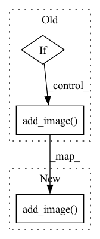

Pattern ID :41668
Before Change
self.logger.dump(desc)
if self.tb_on:
if dump:
t1, t2 = to_array(t1[0]), to_array(t2[0])
t1, t2 = self._denorm_image(t1), self._denorm_image(t2)
t1, t2 = self._process_input_pairs(t1, t2)
self.tb_writer.add_image("Eval/t1", t1, self.eval_step, dataformats="HWC")
self.tb_writer.add_image( "Eval/t2", t2, self.eval_step, dataformats="HWC")
self.tb_writer.add_image("Eval/labels", quantize(tar), self.eval_step, dataformats="HW")
self.tb_writer.add_image("Eval/prob", to_pseudo_color(quantize(prob)), self.eval_step, dataformats="HWC")
self.tb_writer.add_image("Eval/cm", quantize(cm), self.eval_step, dataformats="HW")
for key, feats in out_dict.items():After Change
t1_, t2_ = self._denorm_image(t1_), self._denorm_image(t2_)
t1_, t2_ = self._process_input_pairs(t1_, t2_)
self.tb_writer.add_image("Eval/t1", t1_, self.eval_step, dataformats="HWC")
self.tb_writer.add_image( "Eval/t2", t2_, self.eval_step, dataformats="HWC")
self.tb_writer.add_image("Eval/labels", quantize(tar[j]), self.eval_step, dataformats="HW")
self.tb_writer.add_image("Eval/prob", to_pseudo_color(quantize(prob[j])), self.eval_step, dataformats="HWC")
self.tb_writer.add_image("Eval/cm", quantize(cm[j]), self.eval_step, dataformats="HW")
for key, feats in out_dict.items():In pattern: SUPERPATTERN
Frequency: 4
Non-data size: 3
Instances Fragment ID: 116964121
Project Name: bobholamovic/cdlab
Commit Name: 7f2c31e7c4a11f9c75ffaaced7d0141351ea0be8
Time: 2022-01-12
Author: bob1998425@hotmail.com
File Name: src/impl/trainers/cd_trainer.py
M Class Name: CDTrainer
N Class Name: CDTrainer
M Method Name: evaluate_epoch(2)
N Method Name: evaluate_epoch(2)
M Parent Class: Trainer
N Parent Class: Trainer
M File Name: src/impl/trainers/cd_trainer.py
N File Name: src/impl/trainers/cd_trainer.py
M Start Line: 181
M End Line: 215
N Start Line: 171
N End Line: 225
Before Change
z = z.type_as(imgs)
// train generator
if optimizer_idx == 0:
// generate images
self.generated_imgs = self(z)
// log sampled images
sample_imgs = self.generated_imgs[:6]
grid = torchvision.utils.make_grid(sample_imgs)
self.logger.experiment.add_image( "generated_images", grid, 0)
// ground truth result (ie: all fake)
// put on GPU because we created this tensor inside training_loop
valid = torch.ones(imgs.size(0), 1)After Change
// log sampled images
sample_imgs = self.generated_imgs[:6]
grid = torchvision.utils.make_grid(sample_imgs)
self.logger.experiment.add_image( "generated_images", grid, 0)
// ground truth result (ie: all fake)
// put on GPU because we created this tensor inside training_loop
valid = torch.ones(imgs.size(0), 1) Fragment ID: 116964111
Project Name: pytorchlightning/lightning-tutorials
Commit Name: 0d8b10394e1c1f7acd862e978984a9b5f4f82153
Time: 2023-03-15
Author: aedu.waelchli@gmail.com
File Name: lightning_examples/basic-gan/gan.py
M Class Name: GAN
N Class Name: GAN
M Method Name: training_step(2)
N Method Name: training_step(4)
M Parent Class: L.LightningModule
N Parent Class: LightningModule
M File Name: lightning_examples/basic-gan/gan.py
N File Name: lightning_examples/basic-gan/gan.py
M Start Line: 179
M End Line: 228
N Start Line: 182
N End Line: 233
Before Change
for met in self.metric_ftns:
self.train_metrics.update(met.__name__, met(output_st, target))
if batch_idx % self.log_step == 0:
self.writer.add_image( "input", make_grid(data.cpu(), nrow=8, normalize=True))
self.logger.debug(
"Train Epoch: {} [{}]/[{}] Loss: {:.6f} Supervised Loss: {:.6f} Divergence loss: {:.6f} Knowledge "
"Distillation Loss: {:.6f} Teacher Loss: {:.6f}".format(
epoch,After Change
self.train_metrics.update(met.__name__, met(output_st, target))
if batch_idx % self.log_step == 0:
self.writer.add_image( "input", make_grid(data.cpu(), nrow=8, normalize=True))
st_masks = visualize.viz_pred_cityscapes(output_st)
tc_masks = visualize.viz_pred_cityscapes(output_tc)
self.writer.add_image("st_pred", make_grid(st_masks, nrow=8, normalize=False))
self.writer.add_image("tc_pred", make_grid(tc_masks, nrow=8, normalize=False)) Fragment ID: 116964118
Project Name: lehduong/knowledge-distillation-by-replacing-cheap-conv
Commit Name: dc17e6609ba4c466024f5592652cd83daab95bb4
Time: 2020-02-01
Author: oopsxilitol@gmail.com
File Name: trainer/kd_trainer.py
M Class Name: KnowledgeDistillationTrainer
N Class Name: KnowledgeDistillationTrainer
M Method Name: _train_epoch(2)
N Method Name: _train_epoch(2)
M Parent Class: BaseTrainer
N Parent Class: BaseTrainer
M File Name: trainer/kd_trainer.py
N File Name: trainer/kd_trainer.py
M Start Line: 70
M End Line: 124
N Start Line: 60
N End Line: 131